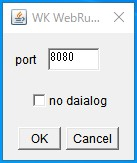

ImageJをNode-REDなど他のアプリケーションと連携したいと常々考えていました。
連携の方法としては、ImageJのWEB API化が汎用的で良いのではと思いました。程よいプラグインはないかと探しましたが、見当たりませんでした。
そこで、ImageJをWEB API化するプラグイン「IJTools_WebAPItoRunMacro」を作成しました。機能としてはマクロを実行する(ij.IJ.runMacro)だけのサンプル的なプラグインです。
利用手順、機能は以下の通りです。
利用する手順
HTTPサーバー機能は、「Java Lightweight HTTP Server」を利用しました。※1
最新のJLHTTPをダウンロードしてください。
展開し、その中にある「jlhttp-*.jar」をImageJのpluginsフォルダにコピーしてください。
こちらから「IJTools_WebAPItoRunMacro.jar」をダウンロードしImageJのpluginsフォルダにコピーしてください。
ImageJを起動し、Plugins -> WK WebRunMacroを実行してください。

- port
- サーバーのport番号を指定してください。
- no dialog
- チェックボックスをONにすると、ダイアログなどは表示されず、ImageJが起動している間はサーバー機能が働き続けます。
「no dialog」をOFFの時は、以下のダイアログが表示されます。

- status
- startでサーバー機能が開始し、stopで停止します。
- OKボタン
- ダイアログは閉じ、サーバー機能は停止します。
※1
オープンソースで軽量なHTTPサーバーです。とても簡単にアプリケーションに埋め込むことができます。
API一覧
| No. | API名 | メソッド | 機能概要 |
| 1 | run_macro | GET | ImageJのマクロを実行する |
| 2 | post_image | POST | ImageJに画像を転送する |
No.1 「run_macro」
- ImageJのマクロを実行します。
- パラメータのmacroは必須。実行するマクロ名を指定します。指定しない場合は、BadRequestを返します。
- それ以外のパラメータはrun_macroの引数です。
- 正常に動作した時は、JSON形式のレスポンスのボディが返ります。
- レスポンスのボディは、ImageJのLogの内容(log)とBase64形式の画像(image)から構成されます。ImageJで出力されない場合は空です。
- 入力例
- [GET]
http://[IPアドレス]:[ポート番号]/run_macro?macro=hoge&par1=1&par2=2&par3 - URIパラメータ
- macro : 実行するマクロ名
- それ以外 : macroの引数(値の無い引数も記述可能)
- ImageJでは、
run("hoge", "par1=1 par2=2 par3")が実行されます。 - 正常時のレスポンス
- レスポンスコード : 200
- Headers : Content-Type:application/json
- Body(JSON形式) :
- ・ 「log」キー : ImageJのLogの内容(改行が入っていないこと)
- ・ 「image」キー : Base64形式の画像
{
"log": "34164,47.7902,0,255,49.3839",
"image": "/9j/4AAQSkZJRgABAgAAAQABAAD/2w…"
}No.2 「post_image」
- ImageJに画像を転送します。
- パラメータのnameは必須。転送した画像ウィンドウの名前となります。指定しない場合は、BadRequestを返します。
- 正常に動作した時は、文字列「success.」を返します。
- POSTで送る内容は、画像のバイト配列。
- 入力例
- [POST]
http://[IPアドレス]:[ポート番号]/post_image?name=hoge - URIパラメータ
- name : 転送した画像の名前。ImageJの画像ウィンドウの名前になります。
- 送信するPOSTの内容
- 画像のバイト配列。byte[]です。
- 正常時のレスポンス
- レスポンスコード : 200
- Headers : Content-Type:text/plain
- Body(文字列) : success.
使い方のイメージ
ImageJでマクロを作成し、それを外部のアプリケーションからのトリガーで実行するイメージです。
run("hoge", "…")で表現できるコマンドであれば、1コマンドずつ実行することも可能です。
「close()」、「setThreshold(*, *)」のようなコマンドを直接実行することはできません。あくまで、ij.IJ.runMacro()を利用したプラグインだからです。